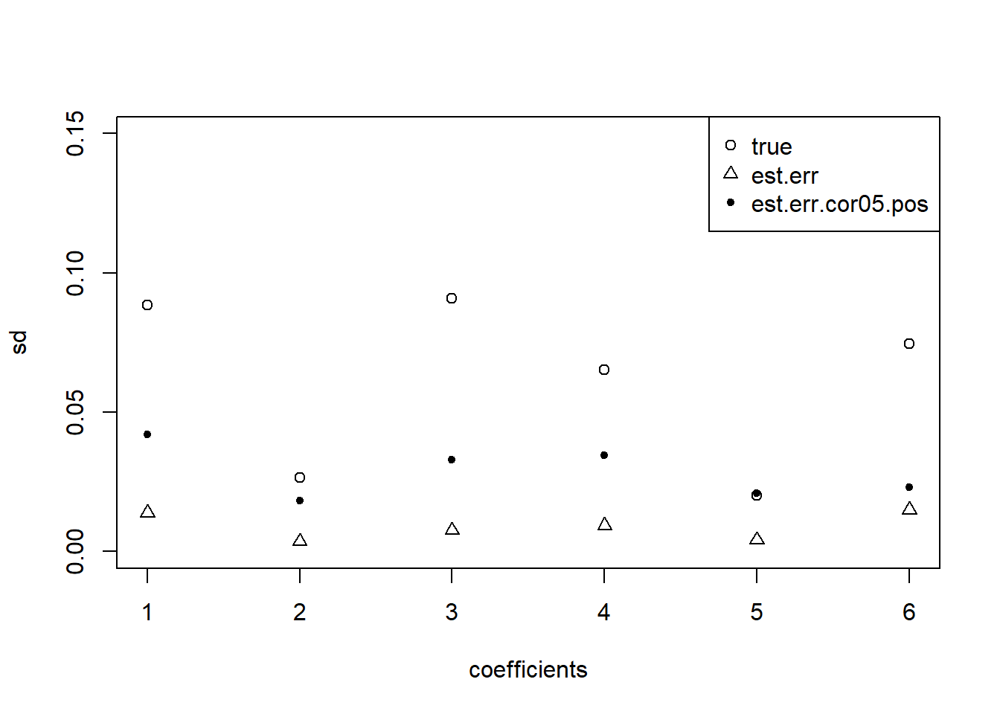

Last updated: 2021-07-22
Checks: 7 0
Knit directory: deconference/
This reproducible R Markdown analysis was created with workflowr (version 1.6.2). The Checks tab describes the reproducibility checks that were applied when the results were created. The Past versions tab lists the development history.
Great! Since the R Markdown file has been committed to the Git repository, you know the exact version of the code that produced these results.
Great job! The global environment was empty. Objects defined in the global environment can affect the analysis in your R Markdown file in unknown ways. For reproduciblity it’s best to always run the code in an empty environment.
The command set.seed(20200403) was run prior to running the code in the R Markdown file. Setting a seed ensures that any results that rely on randomness, e.g. subsampling or permutations, are reproducible.
Great job! Recording the operating system, R version, and package versions is critical for reproducibility.
Nice! There were no cached chunks for this analysis, so you can be confident that you successfully produced the results during this run.
Great job! Using relative paths to the files within your workflowr project makes it easier to run your code on other machines.
Great! You are using Git for version control. Tracking code development and connecting the code version to the results is critical for reproducibility.
The results in this page were generated with repository version 4b48a6c. See the Past versions tab to see a history of the changes made to the R Markdown and HTML files.
Note that you need to be careful to ensure that all relevant files for the analysis have been committed to Git prior to generating the results (you can use wflow_publish or wflow_git_commit). workflowr only checks the R Markdown file, but you know if there are other scripts or data files that it depends on. Below is the status of the Git repository when the results were generated:
Ignored files:
Ignored: .Rhistory
Ignored: .Rproj.user/
Ignored: analysis/figure/
Untracked files:
Untracked: analysis/plot_cor.Rmd
Untracked: code/fast_matrixmult.cpp
Untracked: code/simulation/neuron/simu_neuron_result.R
Untracked: data/day30.h5
Untracked: data/day30.h5.zip
Untracked: data/neuron/
Untracked: data/pancreas/
Untracked: output/geneCor_DABulk_cpm.rds
Untracked: output/geneCor_Epen1Bulk_cpm.rds
Untracked: output/geneCor_FPPBulk_cpm.rds
Untracked: output/geneCor_P_FPPBulk_cpm.rds
Untracked: output/geneCor_SertBulk_cpm.rds
Untracked: output/geneCor_U_NeurBulk_cpm.rds
Untracked: output/geneCor_gtexpancreas_tpm.rds
Untracked: output/geneCor_neuronBulk_cpm.rds
Untracked: output/neuron/
Untracked: output/simu_correlation_betahat_d500_neuron.rds
Untracked: output/simu_correlation_checkavariance_betahat_d500_xin_est_cor_100bulkforcor_alpha05_addjack.rds
Untracked: output/simu_correlation_checkavariance_betahat_d500_xin_hc3.rds
Untracked: output/simu_correlation_checkavariance_betahat_d500_xin_hc3_only_pos_ecov.rds
Untracked: output/simu_correlation_checkavariance_betahat_d500_xin_jack.rds
Untracked: output/simu_correlation_checkavariance_betahat_d500_xin_trueb.rds
Untracked: output/simu_correlation_checkavariance_betahat_d50_xin_est_cor_100bulkforcor_alpha01.rds
Untracked: output/simu_correlation_checkavariance_betahat_d50_xin_est_cor_100bulkforcor_alpha05.rds
Untracked: output/simu_correlation_checkavariance_betahat_d50_xin_est_cor_100bulkforcor_alpha05_addjack.rds
Untracked: output/simu_correlation_checkavariance_betahat_d50_xin_est_cor_100bulkforcor_alpha05_addjack_weighted.rds
Untracked: output/simu_correlation_checkavariance_betahat_d50_xin_est_cor_100bulkforcor_thresh.rds
Untracked: output/simu_correlation_checkavariance_betahat_d50_xin_est_cor_100indi.rds
Untracked: output/simu_correlation_checkavariance_betahat_d50_xin_est_cor_100indi_alpha03.rds
Untracked: output/simu_correlation_checkavariance_betahat_d50_xin_est_cor_10indi.rds
Untracked: output/simu_correlation_checkavariance_betahat_d50_xin_est_cor_10indi_alpha03.rds
Untracked: renv.lock
Untracked: renv/
Unstaged changes:
Modified: .Rprofile
Modified: analysis/neuron_simu_real_remove_outlier.Rmd
Modified: analysis/partial_weights.Rmd
Modified: analysis/simu_correlation_checkvariance_real.Rmd
Modified: analysis/simu_correlation_est_cor.Rmd
Modified: code/deconference_estfunc.R
Modified: code/simulation/neuron/partial_weights.R
Modified: code/simulation/neuron/simu_neuron.R
Modified: code/unadjusted_lm.R
Note that any generated files, e.g. HTML, png, CSS, etc., are not included in this status report because it is ok for generated content to have uncommitted changes.
These are the previous versions of the repository in which changes were made to the R Markdown (analysis/neuron_weight_check_coverage.Rmd) and HTML (docs/neuron_weight_check_coverage.html) files. If you’ve configured a remote Git repository (see ?wflow_git_remote), click on the hyperlinks in the table below to view the files as they were in that past version.
| File | Version | Author | Date | Message |
|---|---|---|---|---|
| Rmd | 4b48a6c | DongyueXie | 2021-07-22 | wflow_publish(“analysis/neuron_weight_check_coverage.Rmd”) |
source('code/deconference_main.R')Loading required package: SummarizedExperimentLoading required package: MatrixGenericsLoading required package: matrixStatsWarning: package 'matrixStats' was built under R version 4.0.5
Attaching package: 'MatrixGenerics'The following objects are masked from 'package:matrixStats':
colAlls, colAnyNAs, colAnys, colAvgsPerRowSet, colCollapse,
colCounts, colCummaxs, colCummins, colCumprods, colCumsums,
colDiffs, colIQRDiffs, colIQRs, colLogSumExps, colMadDiffs,
colMads, colMaxs, colMeans2, colMedians, colMins, colOrderStats,
colProds, colQuantiles, colRanges, colRanks, colSdDiffs, colSds,
colSums2, colTabulates, colVarDiffs, colVars, colWeightedMads,
colWeightedMeans, colWeightedMedians, colWeightedSds,
colWeightedVars, rowAlls, rowAnyNAs, rowAnys, rowAvgsPerColSet,
rowCollapse, rowCounts, rowCummaxs, rowCummins, rowCumprods,
rowCumsums, rowDiffs, rowIQRDiffs, rowIQRs, rowLogSumExps,
rowMadDiffs, rowMads, rowMaxs, rowMeans2, rowMedians, rowMins,
rowOrderStats, rowProds, rowQuantiles, rowRanges, rowRanks,
rowSdDiffs, rowSds, rowSums2, rowTabulates, rowVarDiffs, rowVars,
rowWeightedMads, rowWeightedMeans, rowWeightedMedians,
rowWeightedSds, rowWeightedVarsLoading required package: GenomicRangesLoading required package: stats4Loading required package: BiocGenericsWarning: package 'BiocGenerics' was built under R version 4.0.5Loading required package: parallel
Attaching package: 'BiocGenerics'The following objects are masked from 'package:parallel':
clusterApply, clusterApplyLB, clusterCall, clusterEvalQ,
clusterExport, clusterMap, parApply, parCapply, parLapply,
parLapplyLB, parRapply, parSapply, parSapplyLBThe following objects are masked from 'package:stats':
IQR, mad, sd, var, xtabsThe following objects are masked from 'package:base':
anyDuplicated, append, as.data.frame, basename, cbind, colnames,
dirname, do.call, duplicated, eval, evalq, Filter, Find, get, grep,
grepl, intersect, is.unsorted, lapply, Map, mapply, match, mget,
order, paste, pmax, pmax.int, pmin, pmin.int, Position, rank,
rbind, Reduce, rownames, sapply, setdiff, sort, table, tapply,
union, unique, unsplit, which.max, which.minLoading required package: S4Vectors
Attaching package: 'S4Vectors'The following object is masked from 'package:base':
expand.gridLoading required package: IRanges
Attaching package: 'IRanges'The following object is masked from 'package:grDevices':
windowsLoading required package: GenomeInfoDbWarning: package 'GenomeInfoDb' was built under R version 4.0.5Loading required package: BiobaseWelcome to Bioconductor
Vignettes contain introductory material; view with
'browseVignettes()'. To cite Bioconductor, see
'citation("Biobase")', and for packages 'citation("pkgname")'.
Attaching package: 'Biobase'The following object is masked from 'package:MatrixGenerics':
rowMediansThe following objects are masked from 'package:matrixStats':
anyMissing, rowMedianssource('code/simulation/neuron/simu_neuron_result.R')
out.music = readRDS('output/neuron/neuron_simu_ref11_music.rds')
out = readRDS('output/neuron/neuron_simu_ref11_rm_outlier_weight_allcalcweight_alpha005.rds')
summary_neuron(out,out.music)$rmse_ols
[1] 0.06429597 0.06898028 0.06251654 0.06888672 0.06397330 0.06691900
[7] 0.06169632 0.05788105 0.06417292 0.06088091
$rmse_err
[1] 0.06705503 0.06564274 0.06278444 0.06955151 0.06706707 0.06696198
[7] 0.06484104 0.06356824 0.06893510 0.06191203
$rmse_music
[1] 0.1655253 0.1372583 0.1574024 0.1530455 0.1530307 0.1579551 0.1547720
[8] 0.1508991 0.1446599 0.1510055
$coverage
ols.cv ols.hc0 ols.hc3 err.hc0 err.hc3 err.cor.hc0 err.cor.hc3
[1,] 0.9980620 0.1647287 0.1647287 0.2073643 0.2073643 0.4883721 0.4903101
[2,] 0.9961240 0.1763566 0.1763566 0.2422481 0.2422481 0.5406977 0.5406977
[3,] 0.9961240 0.1666667 0.1666667 0.2170543 0.2189922 0.5077519 0.5096899
[4,] 0.9941860 0.2209302 0.2209302 0.2151163 0.2151163 0.5930233 0.5930233
[5,] 0.9825581 0.1705426 0.1744186 0.1957364 0.1957364 0.4679612 0.4679612
[6,] 0.9922481 0.1531008 0.1531008 0.1899225 0.1899225 0.5038911 0.5038911
[7,] 0.9864341 0.1453488 0.1453488 0.2228682 0.2228682 0.4864341 0.4864341
[8,] 0.9941860 0.1550388 0.1550388 0.1996124 0.1996124 0.5290698 0.5310078
[9,] 0.9883721 0.1569767 0.1569767 0.2054264 0.2054264 0.4728682 0.4748062
[10,] 0.9980620 0.1879845 0.1879845 0.2286822 0.2306202 0.5503876 0.5503876
$median_std
ols.cv ols.hc0 ols.hc3 err.hc0 err.hc3 err.cor.hc0
[1,] 0.10934996 0.005994463 0.006009136 0.007127983 0.007139831 0.02056049
[2,] 0.10739018 0.005777661 0.005786305 0.006938343 0.006948870 0.02174509
[3,] 0.10711702 0.005712848 0.005721955 0.006862026 0.006872210 0.01968360
[4,] 0.14078561 0.006468443 0.006477020 0.008506778 0.008518664 0.02700414
[5,] 0.07764654 0.005814297 0.005821062 0.006913759 0.006927315 0.01796128
[6,] 0.10238406 0.005837156 0.005847208 0.007127501 0.007139729 0.02024858
[7,] 0.08276963 0.005727302 0.005734355 0.007016566 0.007028513 0.01923177
[8,] 0.08763855 0.005640198 0.005646185 0.007418447 0.007429202 0.01995757
[9,] 0.08582005 0.005937778 0.005949935 0.007302137 0.007313037 0.01984416
[10,] 0.09857987 0.005834958 0.005842846 0.007182083 0.007193232 0.02124194
err.cor.hc3
[1,] 0.02056944
[2,] 0.02176720
[3,] 0.01971258
[4,] 0.02704116
[5,] 0.01797497
[6,] 0.02026258
[7,] 0.01927739
[8,] 0.01997902
[9,] 0.01987868
[10,] 0.02125967out[[1]]$input$b[,1:5] [,1] [,2] [,3] [,4] [,5]
[1,] 0.10 0.10 0.10 0.10 0.10
[2,] 0.10 0.10 0.10 0.10 0.10
[3,] 0.15 0.15 0.15 0.15 0.15
[4,] 0.15 0.15 0.15 0.15 0.15
[5,] 0.20 0.20 0.20 0.20 0.20
[6,] 0.30 0.30 0.30 0.30 0.30round(out[[1]]$fit.err.hc0$beta_hat[,1:5],3) [,1] [,2] [,3] [,4] [,5]
[1,] 0.091 0.009 0.230 0.014 0.138
[2,] 0.085 0.079 0.098 0.093 0.049
[3,] 0.139 0.415 0.231 0.168 0.026
[4,] 0.180 0.092 0.059 0.186 0.219
[5,] 0.188 0.193 0.192 0.184 0.208
[6,] 0.316 0.213 0.190 0.354 0.359round(out[[1]]$fit.ols$beta_hat[,1:5],3) [,1] [,2] [,3] [,4] [,5]
DA 0.151 0.063 0.251 0.090 0.199
Epen1 0.086 0.078 0.096 0.094 0.052
Sert 0.134 0.382 0.218 0.159 0.034
FPP 0.193 0.120 0.079 0.202 0.224
P_FPP 0.190 0.195 0.192 0.187 0.209
U_Neur 0.246 0.162 0.163 0.268 0.282round(out.music[[1]][,1:5],3) [,1] [,2] [,3] [,4] [,5]
[1,] 0.000 0.000 0.455 0.263 0.459
[2,] 0.050 0.036 0.250 0.005 0.000
[3,] 0.216 0.294 0.048 0.092 0.000
[4,] 0.000 0.075 0.083 0.256 0.210
[5,] 0.410 0.385 0.164 0.257 0.318
[6,] 0.324 0.210 0.000 0.128 0.013out = readRDS('output/neuron/neuron_simu_ref11_gene12400_weight_alpha005_add_pos_res.rds')
summary_neuron(out,out.music)$rmse_ols
[1] 0.06739701 0.07588035 0.06227686 0.07239093 0.07159201 0.06710860
[7] 0.06242721 0.05998649 0.06750781 0.06666187
$rmse_err
[1] 0.07214213 0.07580290 0.06446898 0.07592658 0.07588867 0.07003103
[7] 0.06821532 0.06640689 0.07366115 0.06917511
$rmse_music
[1] 0.1655253 0.1372583 0.1574024 0.1530455 0.1530307 0.1579551 0.1547720
[8] 0.1508991 0.1446599 0.1510055
$coverage
ols.cv ols.hc0 ols.hc3 err.hc0 err.hc3 err.cor.hc0 err.cor.hc3
[1,] 0.1802326 0.2034884 0.2093023 0.2325581 0.2325581 0.7461240 0.7461240
[2,] 0.1763566 0.1899225 0.1802326 0.2500000 0.2500000 0.7693798 0.7693798
[3,] 0.1589147 0.1918605 0.1821705 0.2228682 0.2228682 0.7616279 0.7616279
[4,] 0.2034884 0.2093023 0.2112403 0.2131783 0.2131783 0.8003876 0.8003876
[5,] 0.2073643 0.2073643 0.1957364 0.2151163 0.2170543 0.7868217 0.7868217
[6,] 0.1608527 0.1744186 0.1763566 0.1918605 0.1918605 0.7965116 0.7984496
[7,] 0.1414729 0.1589147 0.1705426 0.2131783 0.2131783 0.7848837 0.7848837
[8,] 0.1511628 0.1782946 0.1744186 0.2131783 0.2151163 0.8120155 0.8120155
[9,] 0.1608527 0.1627907 0.1608527 0.2306202 0.2344961 0.7945736 0.7945736
[10,] 0.1647287 0.1879845 0.1841085 0.2306202 0.2306202 0.7538760 0.7538760
$median_std
ols.cv ols.hc0 ols.hc3 err.hc0 err.hc3 err.cor.hc0
[1,] 0.005759983 0.006701366 0.006844060 0.008185120 0.008210020 0.03474018
[2,] 0.005489482 0.006536966 0.005930225 0.008001678 0.008027436 0.03554725
[3,] 0.005557734 0.006504492 0.006409951 0.007679315 0.007704217 0.03346516
[4,] 0.006328603 0.007071917 0.007039558 0.009296217 0.009319381 0.03904407
[5,] 0.005839610 0.006506500 0.005874360 0.007749329 0.007770586 0.03664542
[6,] 0.005583264 0.006583356 0.006520776 0.007990342 0.008011053 0.03585024
[7,] 0.005689339 0.006417706 0.006526351 0.007783126 0.007802545 0.03717522
[8,] 0.005470125 0.006396111 0.006433350 0.008189615 0.008213838 0.03837910
[9,] 0.005880083 0.006569234 0.006456359 0.007882947 0.007902590 0.03737701
[10,] 0.005511403 0.006638095 0.006419233 0.008009555 0.008038101 0.03440875
err.cor.hc3
[1,] 0.03481140
[2,] 0.03562834
[3,] 0.03355874
[4,] 0.03913690
[5,] 0.03669075
[6,] 0.03594917
[7,] 0.03726388
[8,] 0.03844528
[9,] 0.03744950
[10,] 0.03447305out[[1]]$input$b[,1:5] [,1] [,2] [,3] [,4] [,5]
[1,] 0.10 0.10 0.10 0.10 0.10
[2,] 0.10 0.10 0.10 0.10 0.10
[3,] 0.15 0.15 0.15 0.15 0.15
[4,] 0.15 0.15 0.15 0.15 0.15
[5,] 0.20 0.20 0.20 0.20 0.20
[6,] 0.30 0.30 0.30 0.30 0.30round(out[[1]]$fit.err.hc0$beta_hat[,1:5],3) [,1] [,2] [,3] [,4] [,5]
[1,] 0.108 0.015 0.252 0.002 0.141
[2,] 0.085 0.072 0.104 0.098 0.053
[3,] 0.132 0.409 0.232 0.167 0.021
[4,] 0.170 0.107 0.050 0.181 0.217
[5,] 0.185 0.187 0.187 0.184 0.206
[6,] 0.321 0.211 0.175 0.368 0.362round(out[[1]]$fit.ols$beta_hat[,1:5],3) [,1] [,2] [,3] [,4] [,5]
DA 0.158 0.061 0.263 0.073 0.193
Epen1 0.087 0.074 0.102 0.100 0.058
Sert 0.130 0.377 0.221 0.159 0.031
FPP 0.181 0.132 0.068 0.196 0.220
P_FPP 0.186 0.189 0.187 0.187 0.207
U_Neur 0.258 0.168 0.159 0.286 0.292round(out.music[[1]][,1:5],3) [,1] [,2] [,3] [,4] [,5]
[1,] 0.000 0.000 0.455 0.263 0.459
[2,] 0.050 0.036 0.250 0.005 0.000
[3,] 0.216 0.294 0.048 0.092 0.000
[4,] 0.000 0.075 0.083 0.256 0.210
[5,] 0.410 0.385 0.164 0.257 0.318
[6,] 0.324 0.210 0.000 0.128 0.013rowMeans(abs((out[[1]]$fit.err.cor.hc3$beta_hat - out[[1]]$input$b)/out[[1]]$fit.err.cor.hc3$beta_se)<1.96,na.rm=T)[1] 0.6627907 0.8720930 0.5813953 0.7209302 1.0000000 0.6395349rowMeans(abs((out[[2]]$fit.err.cor.hc3$beta_hat - out[[2]]$input$b)/out[[2]]$fit.err.cor.hc3$beta_se)<1.96,na.rm=T)[1] 0.7209302 0.8372093 0.5697674 0.7441860 0.9767442 0.7674419rowMeans(abs((out[[3]]$fit.err.cor.hc3$beta_hat - out[[3]]$input$b)/out[[3]]$fit.err.cor.hc3$beta_se)<1.96,na.rm=T)[1] 0.7093023 0.8488372 0.6860465 0.7325581 0.9767442 0.6162791plot(apply(out[[1]]$fit.err.hc0$beta_hat[,1:43],1,sd),ylim = c(0,0.15),ylab = 'sd',xlab='coefficients')
lines(apply(out[[1]]$fit.err.hc0$beta_se[,1:43],1,median,na.rm=T),type='p',pch=2)
lines(apply(out[[1]]$fit.err.cor.hc0$beta_se[,1:43],1,median,na.rm=T),type='p',pch=20)
legend('topright',c('true','est.err','est.err.cor005.pos'),pch=c(1,2,20))out = readRDS('output/neuron/neuron_simu_ref11_gene12400_weight_alpha05_add_pos_res.rds')
summary_neuron(out,out.music)$rmse_ols
[1] 0.06739701 0.07588035 0.06227686 0.07239093 0.07159201
$rmse_err
[1] 0.07214213 0.07580290 0.06446898 0.07592658 0.07588867
$rmse_music
[1] 0.1655253 0.1372583 0.1574024 0.1530455 0.1530307
$coverage
ols.cv ols.hc0 ols.hc3 err.hc0 err.hc3 err.cor.hc0 err.cor.hc3
[1,] 0.1802326 0.2034884 0.2093023 0.2325581 0.2325581 0.6511628 0.6511628
[2,] 0.1763566 0.1899225 0.1802326 0.2500000 0.2500000 0.6976744 0.6976744
[3,] 0.1589147 0.1918605 0.1821705 0.2228682 0.2228682 0.6647287 0.6647287
[4,] 0.2034884 0.2093023 0.2112403 0.2131783 0.2131783 0.7073643 0.7073643
[5,] 0.2073643 0.2073643 0.1957364 0.2151163 0.2170543 0.7228682 0.7248062
$median_std
ols.cv ols.hc0 ols.hc3 err.hc0 err.hc3 err.cor.hc0
[1,] 0.005759983 0.006701366 0.006844060 0.008185120 0.008210020 0.02791896
[2,] 0.005489482 0.006536966 0.005930225 0.008001678 0.008027436 0.03043394
[3,] 0.005557734 0.006504492 0.006409951 0.007679315 0.007704217 0.02799131
[4,] 0.006328603 0.007071917 0.007039558 0.009296217 0.009319381 0.03289783
[5,] 0.005839610 0.006506500 0.005874360 0.007749329 0.007770586 0.03185656
err.cor.hc3
[1,] 0.02801983
[2,] 0.03049174
[3,] 0.02806787
[4,] 0.03298669
[5,] 0.03190025out[[1]]$input$b[,1:5] [,1] [,2] [,3] [,4] [,5]
[1,] 0.10 0.10 0.10 0.10 0.10
[2,] 0.10 0.10 0.10 0.10 0.10
[3,] 0.15 0.15 0.15 0.15 0.15
[4,] 0.15 0.15 0.15 0.15 0.15
[5,] 0.20 0.20 0.20 0.20 0.20
[6,] 0.30 0.30 0.30 0.30 0.30round(out[[1]]$fit.err.hc0$beta_hat[,1:5],3) [,1] [,2] [,3] [,4] [,5]
[1,] 0.108 0.015 0.252 0.002 0.141
[2,] 0.085 0.072 0.104 0.098 0.053
[3,] 0.132 0.409 0.232 0.167 0.021
[4,] 0.170 0.107 0.050 0.181 0.217
[5,] 0.185 0.187 0.187 0.184 0.206
[6,] 0.321 0.211 0.175 0.368 0.362round(out[[1]]$fit.ols$beta_hat[,1:5],3) [,1] [,2] [,3] [,4] [,5]
DA 0.158 0.061 0.263 0.073 0.193
Epen1 0.087 0.074 0.102 0.100 0.058
Sert 0.130 0.377 0.221 0.159 0.031
FPP 0.181 0.132 0.068 0.196 0.220
P_FPP 0.186 0.189 0.187 0.187 0.207
U_Neur 0.258 0.168 0.159 0.286 0.292round(out.music[[1]][,1:5],3) [,1] [,2] [,3] [,4] [,5]
[1,] 0.000 0.000 0.455 0.263 0.459
[2,] 0.050 0.036 0.250 0.005 0.000
[3,] 0.216 0.294 0.048 0.092 0.000
[4,] 0.000 0.075 0.083 0.256 0.210
[5,] 0.410 0.385 0.164 0.257 0.318
[6,] 0.324 0.210 0.000 0.128 0.013plot(apply(out[[1]]$fit.err.hc0$beta_hat[,1:43],1,sd),ylim = c(0,0.15),ylab = 'sd',xlab='coefficients')
lines(apply(out[[1]]$fit.err.hc0$beta_se[,1:43],1,median,na.rm=T),type='p',pch=2)
lines(apply(out[[1]]$fit.err.cor.hc0$beta_se[,1:43],1,median,na.rm=T),type='p',pch=20)
legend('topright',c('true','est.err','est.err.cor05.pos'),pch=c(1,2,20))
out = readRDS('output/neuron/neuron_simu_ref11_gene12400_weight_alpha05.rds')
summary_neuron(out,out.music)$rmse_ols
[1] 0.06739701 0.07588035 0.06227686 0.07239093 0.07159201
$rmse_err
[1] 0.07214213 0.07580290 0.06446898 0.07592658 0.07588867
$rmse_music
[1] 0.1655253 0.1372583 0.1574024 0.1530455 0.1530307
$coverage
ols.cv ols.hc0 ols.hc3 err.hc0 err.hc3 err.cor.hc0 err.cor.hc3
[1,] 0.1802326 0.2034884 0.2093023 0.2325581 0.2325581 0.4251969 0.4251969
[2,] 0.1763566 0.1899225 0.1802326 0.2500000 0.2500000 0.4785156 0.4785156
[3,] 0.1589147 0.1918605 0.1821705 0.2228682 0.2228682 0.4429134 0.4448819
[4,] 0.2034884 0.2093023 0.2112403 0.2131783 0.2131783 0.4756335 0.4756335
[5,] 0.2073643 0.2073643 0.1957364 0.2151163 0.2170543 0.4554455 0.4554455
$median_std
ols.cv ols.hc0 ols.hc3 err.hc0 err.hc3 err.cor.hc0
[1,] 0.005759983 0.006701366 0.006844060 0.008185120 0.008210020 0.01727185
[2,] 0.005489482 0.006536966 0.005930225 0.008001678 0.008027436 0.01907952
[3,] 0.005557734 0.006504492 0.006409951 0.007679315 0.007704217 0.01783356
[4,] 0.006328603 0.007071917 0.007039558 0.009296217 0.009319381 0.02139685
[5,] 0.005839610 0.006506500 0.005874360 0.007749329 0.007770586 0.01541354
err.cor.hc3
[1,] 0.01729508
[2,] 0.01910028
[3,] 0.01787292
[4,] 0.02144614
[5,] 0.01544689out[[1]]$input$b[,1:5] [,1] [,2] [,3] [,4] [,5]
[1,] 0.10 0.10 0.10 0.10 0.10
[2,] 0.10 0.10 0.10 0.10 0.10
[3,] 0.15 0.15 0.15 0.15 0.15
[4,] 0.15 0.15 0.15 0.15 0.15
[5,] 0.20 0.20 0.20 0.20 0.20
[6,] 0.30 0.30 0.30 0.30 0.30round(out[[1]]$fit.err.hc0$beta_hat[,1:5],3) [,1] [,2] [,3] [,4] [,5]
[1,] 0.108 0.015 0.252 0.002 0.141
[2,] 0.085 0.072 0.104 0.098 0.053
[3,] 0.132 0.409 0.232 0.167 0.021
[4,] 0.170 0.107 0.050 0.181 0.217
[5,] 0.185 0.187 0.187 0.184 0.206
[6,] 0.321 0.211 0.175 0.368 0.362round(out[[1]]$fit.ols$beta_hat[,1:5],3) [,1] [,2] [,3] [,4] [,5]
DA 0.158 0.061 0.263 0.073 0.193
Epen1 0.087 0.074 0.102 0.100 0.058
Sert 0.130 0.377 0.221 0.159 0.031
FPP 0.181 0.132 0.068 0.196 0.220
P_FPP 0.186 0.189 0.187 0.187 0.207
U_Neur 0.258 0.168 0.159 0.286 0.292round(out.music[[1]][,1:5],3) [,1] [,2] [,3] [,4] [,5]
[1,] 0.000 0.000 0.455 0.263 0.459
[2,] 0.050 0.036 0.250 0.005 0.000
[3,] 0.216 0.294 0.048 0.092 0.000
[4,] 0.000 0.075 0.083 0.256 0.210
[5,] 0.410 0.385 0.164 0.257 0.318
[6,] 0.324 0.210 0.000 0.128 0.013indis_ref_filter = readRDS('data/neuron/indis_ref_12400by6by97.rds')
b1 = c(0.1,0.1,0.15,0.15,0.2,0.3)
b2 = c(0.1,0.15,0.25,0.3,0.1,0.1)
n = dim(indis_ref_filter)[3]
n_ref = 11
n_bulk = n-n_ref
b = cbind(b1%*%t(rep(1,n_bulk/2)),b2%*%t(rep(1,n_bulk/2)))
set.seed(12345)
ref.idx = sample(1:97,n_ref)
X_array_ref = indis_ref_filter[,,ref.idx]
X_array_bulk = indis_ref_filter[,,-ref.idx]
X = apply(X_array_ref,c(1,2),mean,na.rm=TRUE)
V = t(apply(X_array_ref,c(1),function(z){(cov(t(z),use = 'complete.obs'))}))/length(ref.idx)
G = nrow(X)
K = ncol(X)
V.temp = t(apply(X_array_ref,c(1),function(z){(cov(t(z),use = 'complete.obs'))}))
fit.vash = vashr::vash(sqrt(rowSums(V.temp)),df=length(ref.idx)-1)
w = 1/(fit.vash$sd.post)^2
w = w/sum(w)*G
mb = lapply(1:n_bulk,function(i){X_array_bulk[,,i]%*%b[,i]})
mb = do.call(cbind,mb)
thetab = apply(mb,2,function(z){z/sum(z)})
y = matrix(rpois(G*n_bulk,500*G*thetab),nrow=G)
cor.idx005 = readRDS('data/neuron/gene12400_cor_idx_alpha005.rds')
cor.idx05 = readRDS('data/neuron/gene12400_cor_idx_alpha05.rds')
length(cor.idx005)[1] 51306236length(cor.idx05)[1] 158433384fit.err.hc3.cor005 = estimation_func2(y=y[,1:2],X=X,Vg=V,
w=w,hc.type='hc3',correction=FALSE,
calc_cov=F,verbose=T,
cor.idx=cor.idx005,
centeringXY=F,
true.beta = NULL,
only.scale.pos.res=F,
only.add.pos.res=T)estimating proportionscalculating covariance matrix...covaraince 1 to 2...covaraince 2 to 2performing delta methoddonefit.err.hc3.cor05 = estimation_func2(y=y[,1:2],X=X,Vg=V,
w=w,hc.type='hc3',correction=FALSE,
calc_cov=F,verbose=T,
cor.idx=cor.idx05,
centeringXY=F,
true.beta = NULL,
only.scale.pos.res=F,
only.add.pos.res=T)estimating proportionscalculating covariance matrix...covaraince 1 to 2...covaraince 2 to 2performing delta methoddonefit.err.hc3.cor005$beta_se [,1] [,2]
[1,] 0.06890524 0.05675889
[2,] 0.03613952 0.03337713
[3,] 0.06615973 0.05916414
[4,] 0.05753064 0.05123258
[5,] 0.02988941 0.01989573
[6,] 0.04167540 0.02814023fit.err.hc3.cor05$beta_se [,1] [,2]
[1,] 0.05620389 0.04855177
[2,] 0.02775125 0.02676271
[3,] 0.05114464 0.04502363
[4,] 0.05159225 0.04412867
[5,] 0.03247796 0.02091052
[6,] 0.03812931 0.02690801fit.err.hc3.cor005$Sigma/1e8 [,1] [,2] [,3] [,4] [,5] [,6] [,7] [,8]
[1,] 9.087020 9.017165 7.343219 7.421448 8.145791 8.986188 0.000000 0.000000
[2,] 9.017165 9.949004 7.697273 7.932693 8.518480 9.013273 0.000000 0.000000
[3,] 7.343219 7.697273 6.212357 6.269181 6.813976 7.318196 0.000000 0.000000
[4,] 7.421448 7.932693 6.269181 6.428209 6.959665 7.404267 0.000000 0.000000
[5,] 8.145791 8.518480 6.813976 6.959665 7.799537 8.109111 0.000000 0.000000
[6,] 8.986188 9.013273 7.318196 7.404267 8.109111 8.912702 0.000000 0.000000
[7,] 0.000000 0.000000 0.000000 0.000000 0.000000 0.000000 5.250941 5.761206
[8,] 0.000000 0.000000 0.000000 0.000000 0.000000 0.000000 5.761206 6.823867
[9,] 0.000000 0.000000 0.000000 0.000000 0.000000 0.000000 4.630142 5.328295
[10,] 0.000000 0.000000 0.000000 0.000000 0.000000 0.000000 4.551385 5.272879
[11,] 0.000000 0.000000 0.000000 0.000000 0.000000 0.000000 4.812828 5.494705
[12,] 0.000000 0.000000 0.000000 0.000000 0.000000 0.000000 5.172689 5.714193
[,9] [,10] [,11] [,12]
[1,] 0.000000 0.000000 0.000000 0.000000
[2,] 0.000000 0.000000 0.000000 0.000000
[3,] 0.000000 0.000000 0.000000 0.000000
[4,] 0.000000 0.000000 0.000000 0.000000
[5,] 0.000000 0.000000 0.000000 0.000000
[6,] 0.000000 0.000000 0.000000 0.000000
[7,] 4.630142 4.551385 4.812828 5.172689
[8,] 5.328295 5.272879 5.494705 5.714193
[9,] 4.312019 4.188201 4.402612 4.610550
[10,] 4.188201 4.140298 4.338395 4.516856
[11,] 4.402612 4.338395 4.642265 4.772264
[12,] 4.610550 4.516856 4.772264 5.107733fit.err.hc3.cor05$Sigma/1e8 [,1] [,2] [,3] [,4] [,5] [,6] [,7] [,8]
[1,] 28.57617 28.76423 25.50130 25.31462 28.88108 28.79900 0.00000 0.00000
[2,] 28.76423 29.56634 25.97451 25.85226 29.34120 29.06087 0.00000 0.00000
[3,] 25.50130 25.97451 22.99408 22.82216 25.99555 25.75418 0.00000 0.00000
[4,] 25.31462 25.85226 22.82216 22.70362 25.84914 25.56907 0.00000 0.00000
[5,] 28.88108 29.34120 25.99555 25.84914 29.75344 29.15981 0.00000 0.00000
[6,] 28.79900 29.06087 25.75418 25.56907 29.15981 29.04281 0.00000 0.00000
[7,] 0.00000 0.00000 0.00000 0.00000 0.00000 0.00000 17.51726 18.46208
[8,] 0.00000 0.00000 0.00000 0.00000 0.00000 0.00000 18.46208 19.73604
[9,] 0.00000 0.00000 0.00000 0.00000 0.00000 0.00000 16.62657 17.70134
[10,] 0.00000 0.00000 0.00000 0.00000 0.00000 0.00000 16.02772 17.05066
[11,] 0.00000 0.00000 0.00000 0.00000 0.00000 0.00000 17.61726 18.68319
[12,] 0.00000 0.00000 0.00000 0.00000 0.00000 0.00000 17.54608 18.51249
[,9] [,10] [,11] [,12]
[1,] 0.00000 0.00000 0.00000 0.00000
[2,] 0.00000 0.00000 0.00000 0.00000
[3,] 0.00000 0.00000 0.00000 0.00000
[4,] 0.00000 0.00000 0.00000 0.00000
[5,] 0.00000 0.00000 0.00000 0.00000
[6,] 0.00000 0.00000 0.00000 0.00000
[7,] 16.62657 16.02772 17.61726 17.54608
[8,] 17.70134 17.05066 18.68319 18.51249
[9,] 15.96617 15.36183 16.86819 16.69808
[10,] 15.36183 14.80977 16.26305 16.08285
[11,] 16.86819 16.26305 17.96039 17.67488
[12,] 16.69808 16.08285 17.67488 17.58450fit.err.hc3.cor005$cov_beta_tilde_hat [,1] [,2] [,3] [,4] [,5] [,6]
[1,] 231.23763 21.991065 -142.759765 -31.47720 31.796733 -21.797545
[2,] 21.99106 71.022561 -19.742417 -16.78565 -3.472764 26.215823
[3,] -142.75977 -19.742417 179.957604 -49.84370 -27.133289 5.377951
[4,] -31.47720 -16.785649 -49.843703 134.59587 -25.487082 -38.738284
[5,] 31.79673 -3.472764 -27.133289 -25.48708 39.060955 -1.352362
[6,] -21.79755 26.215823 5.377951 -38.73828 -1.352362 112.191950
[7,] 0.00000 0.000000 0.000000 0.00000 0.000000 0.000000
[8,] 0.00000 0.000000 0.000000 0.00000 0.000000 0.000000
[9,] 0.00000 0.000000 0.000000 0.00000 0.000000 0.000000
[10,] 0.00000 0.000000 0.000000 0.00000 0.000000 0.000000
[11,] 0.00000 0.000000 0.000000 0.00000 0.000000 0.000000
[12,] 0.00000 0.000000 0.000000 0.00000 0.000000 0.000000
[,7] [,8] [,9] [,10] [,11] [,12]
[1,] 0.00000 0.000000 0.00000 0.000000 0.000000 0.000000
[2,] 0.00000 0.000000 0.00000 0.000000 0.000000 0.000000
[3,] 0.00000 0.000000 0.00000 0.000000 0.000000 0.000000
[4,] 0.00000 0.000000 0.00000 0.000000 0.000000 0.000000
[5,] 0.00000 0.000000 0.00000 0.000000 0.000000 0.000000
[6,] 0.00000 0.000000 0.00000 0.000000 0.000000 0.000000
[7,] 154.46214 25.032454 -131.34751 15.022302 12.284050 -38.184504
[8,] 25.03245 61.708745 13.88804 -36.905222 -5.829203 6.237125
[9,] -131.34751 13.888036 163.25560 -79.760694 -13.682701 67.089411
[10,] 15.02230 -36.905222 -79.76069 116.173798 -4.650056 -44.830643
[11,] 12.28405 -5.829203 -13.68270 -4.650056 13.958256 -4.339824
[12,] -38.18450 6.237125 67.08941 -44.830643 -4.339824 46.072255fit.err.hc3.cor05$cov_beta_tilde_hat [,1] [,2] [,3] [,4] [,5] [,6] [,7]
[1,] 156.49926 12.202498 -91.260656 -25.37854 35.503141 12.97792 0.000000
[2,] 12.20250 50.608544 7.157213 -15.53712 6.916401 60.32286 0.000000
[3,] -91.26066 7.157213 105.900934 -26.12901 -21.300166 23.47245 0.000000
[4,] -25.37854 -15.537116 -26.129012 93.13225 -24.823181 -24.27919 0.000000
[5,] 35.50314 6.916401 -21.300166 -24.82318 68.773010 53.21124 0.000000
[6,] 12.97792 60.322858 23.472451 -24.27919 53.211241 218.55453 0.000000
[7,] 0.00000 0.000000 0.000000 0.00000 0.000000 0.00000 113.049266
[8,] 0.00000 0.000000 0.000000 0.00000 0.000000 0.00000 19.286261
[9,] 0.00000 0.000000 0.000000 0.00000 0.000000 0.00000 -91.106019
[10,] 0.00000 0.000000 0.000000 0.00000 0.000000 0.00000 1.674634
[11,] 0.00000 0.000000 0.000000 0.00000 0.000000 0.00000 12.457176
[12,] 0.00000 0.000000 0.000000 0.00000 0.000000 0.00000 -24.621129
[,8] [,9] [,10] [,11] [,12]
[1,] 0.00000000 0.0000000 0.000000 0.00000000 0.000000
[2,] 0.00000000 0.0000000 0.000000 0.00000000 0.000000
[3,] 0.00000000 0.0000000 0.000000 0.00000000 0.000000
[4,] 0.00000000 0.0000000 0.000000 0.00000000 0.000000
[5,] 0.00000000 0.0000000 0.000000 0.00000000 0.000000
[6,] 0.00000000 0.0000000 0.000000 0.00000000 0.000000
[7,] 19.28626081 -91.1060194 1.674634 12.45717590 -24.621129
[8,] 45.61100126 42.4695424 -35.986130 -0.06404458 23.984533
[9,] 42.46954237 149.2084193 -50.479370 -0.81475429 103.804425
[10,] -35.98612994 -50.4793704 79.123947 -3.38400356 -31.263642
[11,] -0.06404458 -0.8147543 -3.384004 17.92740801 6.700321
[12,] 23.98453340 103.8044249 -31.263642 6.70032090 83.528815
sessionInfo()R version 4.0.3 (2020-10-10)
Platform: x86_64-w64-mingw32/x64 (64-bit)
Running under: Windows 10 x64 (build 19043)
Matrix products: default
locale:
[1] LC_COLLATE=English_United States.1252
[2] LC_CTYPE=English_United States.1252
[3] LC_MONETARY=English_United States.1252
[4] LC_NUMERIC=C
[5] LC_TIME=English_United States.1252
attached base packages:
[1] parallel stats4 stats graphics grDevices utils datasets
[8] methods base
other attached packages:
[1] SingleCellExperiment_1.12.0 SummarizedExperiment_1.20.0
[3] Biobase_2.50.0 GenomicRanges_1.42.0
[5] GenomeInfoDb_1.26.7 IRanges_2.24.1
[7] S4Vectors_0.28.1 BiocGenerics_0.36.1
[9] MatrixGenerics_1.2.1 matrixStats_0.58.0
[11] workflowr_1.6.2
loaded via a namespace (and not attached):
[1] Rcpp_1.0.5 invgamma_1.1 lattice_0.20-41
[4] assertthat_0.2.1 rprojroot_2.0.2 digest_0.6.27
[7] utf8_1.2.1 truncnorm_1.0-8 plyr_1.8.6
[10] R6_2.5.0 evaluate_0.14 ggplot2_3.3.3
[13] pillar_1.6.0 vashr_0.99.1 zlibbioc_1.36.0
[16] rlang_0.4.10 irlba_2.3.3 whisker_0.4
[19] Matrix_1.2-18 qvalue_2.22.0 rmarkdown_2.5
[22] splines_4.0.3 stringr_1.4.0 RCurl_1.98-1.3
[25] munsell_0.5.0 mixsqp_0.3-43 DelayedArray_0.16.3
[28] compiler_4.0.3 httpuv_1.5.4 xfun_0.22
[31] pkgconfig_2.0.3 SQUAREM_2020.5 htmltools_0.5.1.1
[34] tidyselect_1.1.0 tibble_3.1.0 GenomeInfoDbData_1.2.4
[37] fansi_0.4.2 crayon_1.4.1 dplyr_1.0.5
[40] later_1.1.0.1 bitops_1.0-7 grid_4.0.3
[43] DBI_1.1.1 gtable_0.3.0 lifecycle_1.0.0
[46] git2r_0.27.1 magrittr_2.0.1 scales_1.1.1
[49] stringi_1.5.3 reshape2_1.4.4 XVector_0.30.0
[52] fs_1.5.0 promises_1.1.1 ellipsis_0.3.1
[55] vctrs_0.3.7 generics_0.1.0 tools_4.0.3
[58] glue_1.4.2 purrr_0.3.4 yaml_2.2.1
[61] colorspace_2.0-0 ashr_2.2-47 knitr_1.30